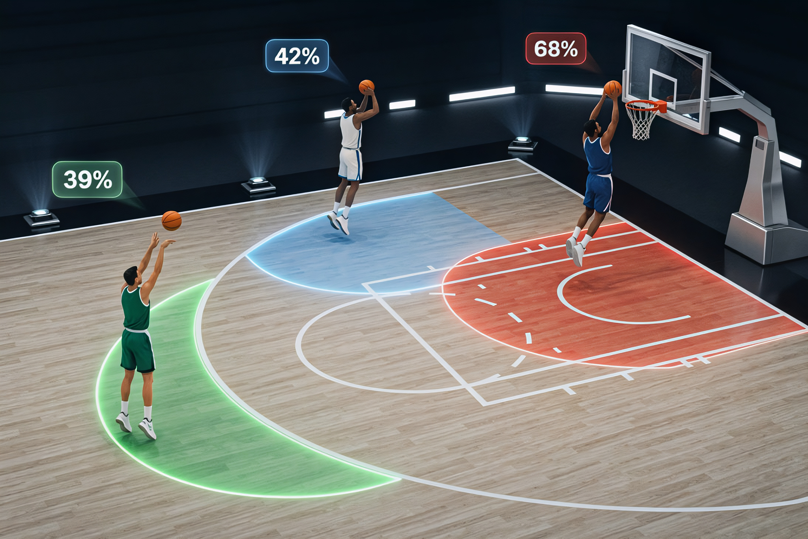

Points Over Expected: A Fair Price for Every Shot
Introducing the HoopStatsEU expected points model

A fair price for every shot
When watching a basketball game, the outcome of a shot should not be the criterion for whether it was the right shot to be taken. A corner three from a 42% shooter is a completely different possession than a 8-meter prayer from a big who lives in the paint, even if both end up as three points on the scoreboard.
The expected points (xPts) model puts a number on that instinct. Every shot gets a fair price: what it should be worth, given where it was taken and by whom. Add the prices up over a game and you get the points a player should have scored in an average night. The gap between what he actually scored and that fair price is his Points over Expected (PoE):
PoE = actual points − expected points. A positive value means he finished better than his shot diet and track record said he would; a negative value means he shot poorly.
How the price is set
Think of it as a scouting report that rewrites itself after every game, using only what was known before tip-off:
- Where the shot came from. The floor is carved into ten shooting zones: paint, restricted area, mid-range, both corners, both elbows, center, long range and very long range, plus the free-throw line, which the model treats as an eleventh zone of its own. Every zone, is priced through the exact same pipeline described below.
- Who’s shooting it. Each player’s career percentage in that zone sets the baseline.
- No track record? Fall back on position. A rookie, or a player with zero attempts in a zone, starts from what other players at his position shot there last season.
- Threes aren’t for everyone. A player who almost never steps out isn’t priced like an average shooter from deep — his number gets dragged toward a low floor (around 15.5%) in proportion to how rarely he actually shoots 3s.
- The hot hand exists. The last five games nudge the price up or down, so a hot streak moves the number without rewriting who the real player is.
Multiply each zone’s attempts by that price and by the shot’s value (2 or 3, or 1 from the free-throw line), add it all up, and you’ve got the player’s expected points for the night.
The Shooting zones

Five examples show what the model can and can’t tell us.
Example 1 — Streaks: one cold, one hot
Streaks are where basketball people trust their eyes and distrust the box score. Below, two stretches, game by game. A game counts as hot when the player beat his expected points by 3 or more, and cold when he fell short by 3 or more.
The cold stretch: Tyler Dorsey
Ten games starting 06 January 2026.

Across these 10 games Dorsey scored 141 points against 155.5 expected, a difference of -14.5. He had 7 cold games and 1 hot, with the longest cold run lasting 4 games. The worst night was at ZALGIRIS on 25 February: 16 points when his shots were worth 20.3 (-4.3).
The hot stretch: Devon Hall, hot when it mattered the most!
Hall’s final part of the 2024-25 season.

In 10 games, Hall scored 89 points against 68.1 expected (+20.9). That’s 4 hot games, and a longest hot run of 2. His best night came vs PANATHINAIKOS on 23 May: 18 points on shots worth 10.3 (+7.7).
Put the two charts side by side and you have the whole idea. Same model, one player running below his fair price for ten games and another running above it when the lights were brightest.
Example 2 — Kendrick Nunn: a rookie season, shot by shot
A rookie is the hardest player in the league to price. No EuroLeague résumé means the model starts from what players at his position typically shoot from each zone, then hands the wheel over to his own attempts as they pile up. Here’s Kendrick Nunn’s debut season, 2023-24.

Over 35 games Nunn averaged 16.0 points against 15.0 expected, a season total of 561 actual vs 525 expected (+36). The bottom chart breaks that down. His biggest cushion came from 3-pointers (+39 points above expectation), and the weakest part of his game relative to the model was his 2-pointers (-8).
That’s exactly the kind of split a staff wants walking into a film session: not just that a rookie over or under-performed, but which part of his game did it.
Example 3 — Shooting bigs vs non-shooting bigs: Wright and Tavares
Two centers, two very different relationships with the three-point line. Moses Wright has a modest 3-pointer in his repertoire and Walter Tavares is a traditional big man. How does the model price that difference?
Remember rule 4 from earlier: a player’s three-point price is tied to how often he actually takes them. A non-shooter can’t fake his way to a good price by adopting his position average, the model drags him toward the floor. A willing shooter climbs toward his own record. The heat map below shows expected points per three-point attempt in each zone, season by season.

| PLAYER_NAME | Seasons | Games | 3PA | 3PM | 3P% | 3PA per game | Avg price per 3PA (pts) |
|---|---|---|---|---|---|---|---|
| MOSES WRIGHT | 3 | 77 | 46 | 14 | 30.4% | 0.60 | 0.85 |
| WALTER TAVARES | 9 | 315 | 3 | 0 | 0.0% | 0.01 | 0.52 |
Read the top chart first. Wright’s tiles sit visibly higher than Tavares’s, because a player who actually shoots threes earns a price built from his own record, while a player who almost never does gets priced near the floor (about 15.5% — roughly 0.47 points per attempt). The bottom chart shows exactly why: the volume gap is the price gap.
For a coach, the takeaway is practical. A way of distinguishing between an occasional shooter and a completely non-shooter.
Example 4 — The best and worst nights in EuroLeague history
Now the extremes. Among every player performance since the model’s coverage begins (EuroLeague 2008-09 onward) with at least 10 career field-goal attempts, which beat their fair price by the most, and which fell the shortest?

The five hottest
| Player | Team | Season | Date | Game | FGA | PTS | xPTS | PoE |
|---|---|---|---|---|---|---|---|---|
| KENDRICK NUNN | PANATHINAIKOS | 2024-25 | 03 Apr 2025 | @ MONACO | 17 | 37 | 18.1 | 18.9 |
| SASHA VEZENKOV | OLYMPIACOS | 2024-25 | 10 Jan 2025 | vs BAYERN MUNICH | 20 | 45 | 26.6 | 18.4 |
| ANDREW GOUDELOCK | FENERBAHCE | 2014-15 | 13 Nov 2014 | @ BAYERN MUNICH | 18 | 34 | 15.7 | 18.3 |
| ANDREAS OBST | BAYERN MUNICH | 2024-25 | 22 Nov 2024 | vs BARCELONA | 16 | 34 | 16.0 | 18.0 |
| PJ DOZIER | EFES | 2025-26 | 07 Nov 2025 | vs OLIMPIA MILANO | 19 | 34 | 17.0 | 17.0 |
The five coldest
| Player | Team | Season | Date | Game | FGA | PTS | xPTS | PoE |
|---|---|---|---|---|---|---|---|---|
| ISAIAH CANAAN | UNICS | 2021-22 | 02 Feb 2022 | @ ALBA BERLIN | 15 | 5 | 21.7 | -16.7 |
| TJ SHORTS | PARIS BASKETBALL | 2024-25 | 01 Nov 2024 | vs BASKONIA | 21 | 9 | 23.5 | -14.5 |
| MIKE JAMES | MONACO | 2021-22 | 28 Jan 2022 | vs REAL MADRID | 19 | 11 | 24.9 | -13.9 |
| JARED RHODEN | PARIS BASKETBALL | 2025-26 | 17 Apr 2026 | @ ZALGIRIS | 13 | 4 | 17.5 | -13.5 |
| BRAD WANAMAKER | DARUSSAFAKA | 2016-17 | 09 Dec 2016 | @ BASKONIA | 11 | 3 | 15.9 | -12.9 |
The hottest night in the database belongs to KENDRICK NUNN, who dropped 37 points on shots worth 18.1 (+18.9). The coldest was ISAIAH CANAAN, with 5 against 21.7 (-16.7). Compare those swings to the ordinary ones in Example 1, and you get a feel for how far from normal these nights really are.
Example 5 — When the scoreboard lies
The all-time lists are dominated by big scoring nights, but PoE has a more interesting use: telling you when a average points total was actually a great shooting night, and when a high points total was a poor one. Two games from the 2025-26 season make the point.
Scoring over-performance: Walkup

THOMAS WALKUP finished with 14 points. The model priced his shots at only 5, meaning he beat his fair price by +9.0. Few looks and he cashed nearly every one.
The cold high-scoring night: Hifi

NADIR HIFI put up 24 points. Impressive amount, but his shots were worth 31.6, so he finished -7.6 relative to expectation. Volume carried the score; efficiency didn’t
Two box scores, two completely opposite stories. That’s the whole point of the model: the scoreboard tells you how many points a player scored; xPts tells you how well he had to shoot to get them.
What the model doesn’t see
xPts is a shot-quality model, so it has no view of defenders, shot clock, passing, screens, or whether a shot was contested. It credits finishing, not creation. And it only knows what happened in EuroLeague games — so a newcomer’s price starts from his position’s norm, no matter how good his résumé was somewhere else.